Module 8—Acid-Base Equilibrium
 Self-Check
Self-Check
SC 1. Complete “Practice” questions 1–4 on page 716 of the textbook.
Self-Check Answers
Contact your teacher if your answers vary significantly from the answers provided here.
SC 1.
Practice 1.
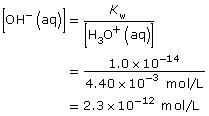
Practice 2.
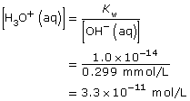
Practice 3.
HCl(aq) + H2O(l) → H3O+(aq) + Cl–(aq)
Since HCl(aq) is a strong acid, it reacts 100% with water; therefore,
[H3O+(aq)] = [HCl(aq)]
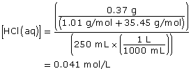
[H3O+(aq)] = 0.041 mol/L
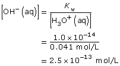
Practice 4.
Ca(OH)2(aq) → Ca2+(aq) + 2 OH–(aq)
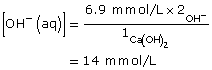
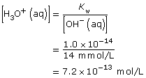
 Discuss
Discuss
In the previous section you used the water ionization constant, Kw, to perform calculations. In Module 7 you learned to interpret the value of equilibrium constants like Kw.
D 1. What does the value for Kw mean about the position of the equilibrium of water?
D 2. Which reaction is favoured in this equilibrium, the forward or reverse, and to what degree?
D 3. What empirical observations do you have to support your answers to D 1 and D 2?
Post your answers to the discussion area for your class, and submit a copy to your teacher.
 Read
Read
Your ability to calculate solution pH and pOH is critical to your investigation of the equilibrium of acids and bases. In Chemistry 20 you were restricted in your ability to perform calculations by not knowing how to convert between concentrations of hydroxide ions and hydronium ions within a solution. With your understanding of the equilibrium of water from the previous section, you can now use Kw to quickly complete such calculations.
Read “Communicating Concentrations: pH and pOH” on pages 716–717 of the textbook. Remember to add new information to the appropriate summary you began at the start of this lesson.
Self-Check
SC 2. Complete “Practice” questions 7–8 on page 718 of the textbook.
Self-Check Answers
Contact your teacher if your answers vary significantly from the answers provided here.
SC 2.
Practice 7.
a.
[H3O+(aq)] (mol/L) |
[OH–(aq)] (mol/L) |
pH |
pOH |
|
Oranges |
5.5 × 10–3 |
1.8 × 10–12 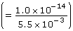 |
2.3 (= –log (5.5 × 10–3)) |
11.74 (= 14.00 − 2.26) |
Asparagus |
3 × 10–9 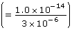 |
3 × 10–6 |
8.4 (= 14.00 − 5.6) |
5.6 |
Olives |
5 × 10–4 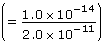 |
2.0 × 10–11 |
3.30 |
10.70 (= 14.00 − 3.30) |
Blackberries |
4 × 10–4 (=10–3.4) |
3 × 10–11 |
3.4 (= 14.00 – 10.6) |
10.6 |
b. The oranges would taste most sour because they have the lowest pH.
Practice 8.
NaOH(aq) → Na+(aq) + OH–(aq)
Since NaOH(aq) is highly soluble in water, it completely dissociates. Therefore,
[OH–(aq)] = [NaOH(aq)]
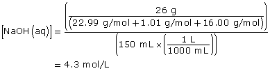
[OH–(aq)] = 4.3 mol/L
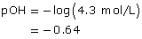
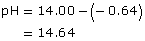